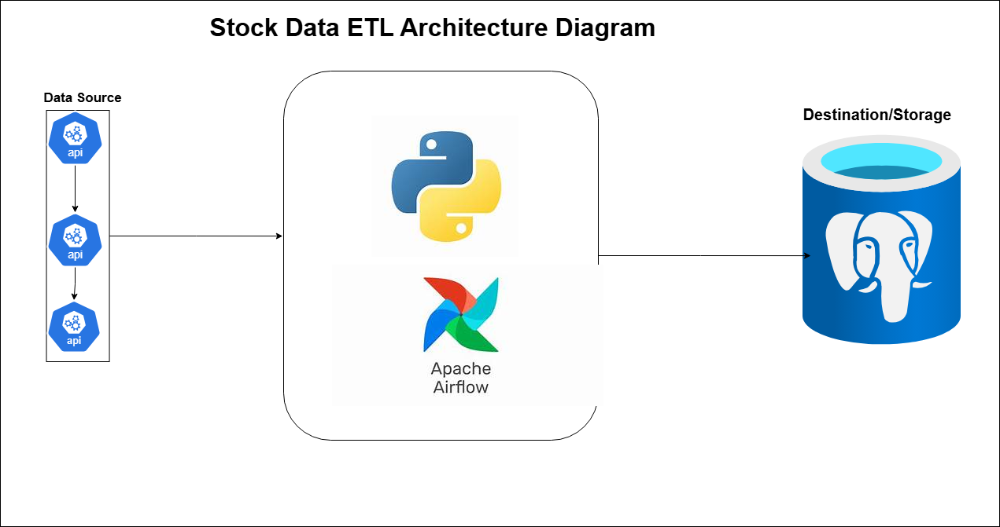

Available for Hire
Hi, I'm Stanley Agorchukwu
Data Engineer building scalable systems for real-time insights and robust data governance.
Data Engineer building scalable systems for real-time insights and robust data governance.
Python
SQL/dbt
Spark
Airflow
AWS
Docker

Problem: The lack of a centralized, automated data pipeline for eyewear vendors resulted in fragmented product information and pricing inconsistencies, hindering the ability to provide patients with real-time, accurate comparisons.

Problem: Scaling security analytics to process 10M+ daily events while maintaining sub-5-minute latency for fraud detection requires a distributed architecture to overcome the memory constraints and throughput limitations of traditional data systems.

Problem: Ziko Logistics faced operational bottlenecks due to disparate data silos (IoT, ERP, CRM), exponential data volume/velocity, and inconsistent data quality that delayed critical decision-making. I engineered a scalable, automated ETL framework using Python and Windows Task Scheduler to ingest real-time API data into Azure Data Lake Gen 2, ensuring a centralized, high-quality "single source of truth" for predictive analytics

Problem: Mega Bank faced challenges managing high-volume transactional data across fragmented systems, leading to inconsistent data quality, redundant records, and limited accessibility for analytics and reporting. Developed an automated ETL and data warehousing solution using PySpark, PostgreSQL, and Apache Airflow to centralize, cleanse, normalize, and process banking data efficiently, improving data reliability, accessibility, and analytics readiness for business decision-making.

Problem: Manual stock data retrieval is inefficient, prone to API errors, and vulnerable to messy, duplicate data structure issues. An automated Apache Airflow ETL pipeline that systematically extracts raw REST API stock data, sanitizes it with Python Pandas, and loads structured records into PostgreSQL.